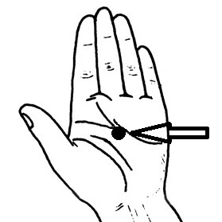
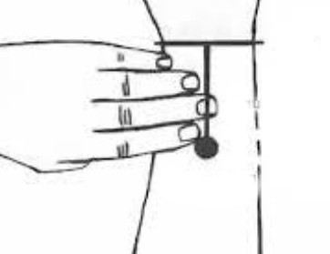

Figure 1: Chinese Organ Clock Visualization
Steven Schram PhD, DC, LAc
© 2025 Steven Schram. All rights reserved.
Background: Jet lag affects over 90% of long-haul travelers. Chronoacupuncture, a Traditional Chinese Medicine (TCM) approach involving acupressure stimulation of specific acupuncture points at time-specific intervals, has been proposed as viable intervention but has never been systematically evaluated.
Objective: This pilot study evaluates chronoacupuncture as a potential intervention for jet lag using a mobile health platform, JetLagPro, which guides acupressure stimulation and collects real-world outcome data.
Methods: Participants using the JetLagPro mobile application receive timed prompts to stimulate acupuncture points aligned with their destination time zone. Following travel, participants completed an online survey to assess resultant symptom severity.
Outcomes: We will analyze survey and trip data to determine if chronoacupuncture can be effective in synchronizing circadian rhythms.
Significance: This study is the first systematic investigation of chronoacupuncture for jet lag. Findings will clarify whether this method of chronoacupuncture offers an effective intervention.
Keywords: chronoacupuncture, circadian rhythm, jet lag, horary points, Traditional Chinese Medicine, acupressure
Jet lag is a widespread health concern, with economic implications including reduced productivity and increased healthcare costs. Current interventions of light therapy, melatonin, strategic sleeping and varied meal scheduling show variable efficacy. Individual differences in circadian flexibility further complicate treatment approaches.1
Acupuncture theory offers an alternative perspective through its understanding of temporal physiology. The Chinese Organ Clock, documented in classical texts dating back millennia, describes a 24-hour cycle where different organ systems reach peak activity during specific two-hour windows. This temporal theory by the ancient sages parallels modern discoveries in circadian biology, where peripheral clocks in organs coordinate with the central circadian pacemaker.
Chronoacupuncture applies this temporal theory by stimulating specific acupuncture points during their designated active periods. For jet lag applications, we use the destination time zone for stimulation scheduling, theoretically facilitating faster circadian adaptation. Despite advocacy and use among acupuncturists, this approach lacks systematic evaluation, representing an information gap between traditional practice and evidence-based medicine.
Circadian rhythms synchronize physiological processes to a 24-26 hour cycle, governed by the suprachiasmatic nucleus (SCN), a hypothalamic cluster of neurons entrained by light via melanopsin containing retinal cells.2,3 The SCN coordinates peripheral clocks in organs like the liver and heart, which regulate tissue-specific functions including vascular function and blood pressure regulation.4,5 Core clock genes (Clock, Bmal1, Period, Cryptochrome) drive a molecular feedback loop, producing rhythmic gene expression.6 Synchronization is maintained by Zeitgebers, external signals such as light, temperature, activity, and meals.7
Jet lag occurs when rapid time zone changes desynchronize these clocks, delaying adaptation. Adaptation rates vary widely, underscoring the need for effective interventions. This scientific framework parallels acupuncture's temporal perspective, as embodied in the Chinese Organ Clock, suggesting a synergy between modern circadian biology and traditional acupuncture practices.
Acupuncture theory maps physiological processes to a 24-hour cycle through the Chinese Organ Clock, where vital energy (Qi) flows through 12 meridians, each peaking during a two-hour window.8 Our focus is on using both horary points and substitute points where practicality of stimulation is required. See Figure 1 and Table 1. Over 40 years ago, Khoe and then Amaro postulated that stimulating horary points sequentially during travel could help pre-synchronize our organ systems to new time zones, targeting jet lag's circadian misalignment.9,10 While acupuncturists report using horary points for jet lag for many decades, no studies have validated its efficacy, hence this study. We intend to evaluate chronoacupuncture and quantify the effect of horary point stimulation on jet lag symptoms.
Figure 1: Chinese Organ Clock Visualization
| Time Range | Meridian / Organ System | Active Point |
|---|---|---|
| 3:00 AM – 5:00 AM | Lung | LU-8 |
| 5:00 AM – 7:00 AM | Large Intestine | LI-1 |
| 7:00 AM – 9:00 AM | Stomach | ST-36 |
| 9:00 AM – 11:00 AM | Spleen | SP-10* |
| 11:00 AM – 1:00 PM | Heart | HT-8 |
| 1:00 PM – 3:00 PM | Small Intestine | SI-5 |
| 3:00 PM – 5:00 PM | Bladder | BL-2* |
| 5:00 PM – 7:00 PM | Kidney | KI-27* |
| 7:00 PM – 9:00 PM | Pericardium | PC-8 |
| 9:00 PM – 11:00 PM | San Jiao (Triple Warmer) | SJ-6 |
| 11:00 PM – 1:00 AM | Gallbladder | GB-20* |
| 1:00 AM – 3:00 AM | Liver | LIV-8* |
*Several lower limb points were substituted for improved accessibility in economy class seating. See discussion below under "Strategic Changes for Usability."
Chronoacupuncture hypothesizes that stimulating horary points during their peak activity periods acts as a non-photic synchronizer of circadian rhythms with destination time zones. This approach leverages the Chinese Organ Clock and may modulate peripheral clocks via autonomic or hormonal pathways. According to TCM theory, the horary points represent optimal access points along meridians during specific time windows, but the entire meridian pathway remains active during its organ's peak period. Thus approximate stimulation of the general meridian area around the horary point during the correct time window may provide therapeutic benefit even without expert-level point precision.
A recent comprehensive review validates that acupuncture significantly affects circadian biology, demonstrating measurable impacts on circadian clock genes, neurotransmitter regulation, and sleep-wake cycles (Wu & Zhao, 2024).11 While these studies employed known acupuncture points known to assist with sleep issues rather than the horary point methodology proposed here, they establish the neurobiological plausibility of acupuncture serving as a non-photic zeitgeber for circadian rhythm modulation.
User feedback reported difficulty in accessing ankle and foot points when flying economy. For the purposes of stimulating the channel, we assert that accessible points will be more effective than inaccessible ones. Thus we revised the point recommendations to use SP-10 (above the knee) for SP-3, BL-2 (inner eyebrow) for BL-66, GB-20 (back of head) for GB-41, LIV-8 (medial knee) for LIV-1, and KI-27 (upper chest) for KI-10. We would rather have user compliance and real-world usability rather than the original horary points that are more difficult to use.
The mobile application provides users with timing and instructions to stimulate specific points based on the destination time. Ideally starting at the airport (or anytime thereafter), users select the destination. The app immediately identifies the first active point matching the destination time. This process is illustrated below.

|

|

|
|
Screen 1: Basic Instructions |
Screen 2: Destination Selection |
Screen 3: Point Stimulation |
Scheduled reminders pop up at appropriate times prompting the user to complete a full 24-hour cycle. The reminders are persistent and remain on the user's phone (or watch) until clicked. When clicked, the user is shown the correct image beside a looping video showing how to stimulate the point on the Points Screen (#3). The watch also provides a "show me" option that displays the point image. Written instructions are provided above and below the phone images.
All point images and figures in this paper are original creations or author-modified variants of generic/public domain anatomical illustrations, with point locations added. The Chinese Organ Clock visualization (Figure 1) is an original image by the author and based on widely-used traditional representations in the public domain.

|

|

|

|

|

|
|
LU-8 |
LI-1 |
ST-36 |
SP-10 |
HT-8 |
SI-5 |

|

|
 |  |

|

|
|
BL-2 |
KI-27 |
PC-8 |
SJ-6 |
GB-20 |
LIV-8 |
After the trip ends, the app logs trip data to Firebase, including arrival timezone to validate actual travel. One critical data element we store at trip end is the timezone difference between the origin and destination calculated using IANA timezone identifiers. Our application automatically accounts for Daylight Saving Time when calculating timezone offsets using the device's native timezone libraries. However, trips that begin or end during DST transitions may experience ±1 hour variance in reported timezone counts due to the timing of when offsets are captured.
A final step when the trip ends is the scheduling of a notification for 2 days later to remind the user to complete the website survey. This survey is a streamlined assessment based on the Liverpool Jet Lag Questionnaire's core symptom domains (listed below), using 1-5 severity ranges adapted for real-world mobile use as a single post-travel evaluation.
| Survey Questions | Data Reported by the App |
|---|---|
|
Overall anticipated jet lag severity; Post travel: Sleep disturbance, Daytime fatigue, Difficulty concentrating, Irritability, Lack of Motivation/energy, Gastrointestinal issues; Age Range |
Direction of travel; Number of time zones crossed; Number of points marked as stimulated; Local timezone to validate location |
Does chronoacupuncture as provided by the app reduce jet lag symptoms compared to no intervention?
We use a within-subject design where each participant serves as their own control. Participants complete surveys that include two separate elements: (1) anticipated symptom severity based on prior travel experience, and (2) post-travel symptom severity as reported sometime after completing their journey.
Our analysis compares survey results to baseline severity data from Waterhouse et al.'s 2007 comprehensive quantitative assessment of jet lag severity stratified by time zones12. That study shows non-interventional severity falls into the following ranges on a 1-5 severity scale.
Participants are grouped by the number of acupressure points reported by the app as stimulated during travel:
For each stimulation group, we analyze post-travel symptom severity across different time zone categories to assess how stimulation levels affects the expected symptom increase from crossing more time zones. This grouping provides sufficient sample sizes for statistical analysis while maintaining meaningful intervention categories.
The app records the timezone offset between origin and destination in hours. This offset represents the circadian disruption imposed on the traveler's biological clock at arrival. Travel direction (east/west) indicates whether the traveler must advance their internal clock (eastward travel, destination ahead) or delay it (westward travel, destination behind), regardless of geographic direction. For example, Los Angeles to Sydney involves westward geographic travel but is classified as "east" because Sydney time is 18 hours ahead, requiring circadian phase advance. For trips crossing more than 12 time zones, the circadian system may eventually adjust via the shorter path, but the initial offset captures the temporal displacement at arrival. Our analysis correlates jet lag severity with this time displacement.
The primary analysis is a comprehensive dose-response visualization showing the interaction between time zones crossed (X-axis) and aggregate symptom severity (Y-axis) across intervention levels. Each intervention group is represented as a separate line, with the baseline data displayed as a dashed reference line showing expected natural progression without intervention. We present two graphs with the following data.
For each data point, we calculate:
The main analysis examines the interaction between time zones crossed and points stimulated on post-travel symptom severity. We will:
Our secondary analysis examines if anticipated vs. actual symptoms show significant differences.
While acupuncturists are skilled in precise point location and pressure, our typical users are not experts. Some acupressure points may be harder to locate and stimulate correctly during a flight. In real‑world use, users may:
We expect and actually welcome this variability. Our question is whether chronoacupressure provides benefit for the average user under real-world conditions. The naturalistic design intentionally captures the intervention as it would be used in practice, including variability in compliance, point location accuracy, and stimulation technique. As stated earlier, TCM theory suggests the entire meridian is active during its peak period, so approximate stimulation during the correct time window should still engage the therapeutic mechanism even if the stimulation was less than ideal.
We are waiting on survey results from app usage. App distribution is starting in late 2025. It may take a few monthy of use to get sufficient data to analyze. The graph does show current live data.
We analyzed data from [loading...] survey results and stimulation records and present that data in the graph below. We examined how different levels of acupressure stimulation affect jet lag symptoms across time zones crossed. The baseline (dashed gray line) represents expected natural jet lag severity without intervention.
Chart Legend: Red (0-2 points) = minimal usage, Orange (3-5 points) = low usage, Blue (6-8 points) = moderate usage, Green (9-12 points) = high usage. Error bars show ±1 standard error.
Currently, we have N data points for our graph and analysis. Until we achieve sufficient statistical power (p < 0.05), the results should not be considered statistically significant for reaching conclusions regarding our primary research question.
The proposed mechanism for chronoacupuncture involves stimulation of acupressure points triggering afferent nerve pathways that may influence the hypothalamic-pituitary-adrenal axis and autonomic nervous system. This peripheral stimulation could modulate melatonin secretion patterns, cortisol rhythms, and peripheral clock gene expression, effectively serving as a non-photic zeitgeber to accelerate circadian realignment.
This paper presents a prospective observational cohort study that evaluated chronoacupuncture for jet lag management in [XXX] long distance travelers. Participants used the JetLagPro mobile application to self-administer horary point stimulation according to destination time zones and completed a jet lag assessment post-travel. The study design prioritized external validity by evaluating the intervention under real-world conditions rather than controlled laboratory settings. Statistical analysis of the dataset provides evidence regarding chronoacupuncture's effectiveness as a non-pharmacological approach to circadian rhythm adjustment during travel.
Traditional clinical trials face significant challenges in jet lag research due to the logistical complexity of controlling travel variables, participant demographics, and environmental factors. Our app's naturalistic data collection approach using a well defined survey approach circumvents these limitations while capturing real-world efficacy across diverse travel conditions. However, this methodology introduces potential confounding variables including participant compliance, placebo effects inherent in tactile interventions, and subjective symptom reporting.
This study evaluates chronoacupuncture's effectiveness for jet lag by stimulating horary points, which are acupuncture points aligned with the Chinese Organ Clock's 24-hour qi cycle. For practicality, we substituted the Kidney horary point KI-10 (behind the knee, hard to locate) with the Kidney Source point KI-3 (medial ankle, more accessible). TCM theory suggests that the entire meridian is active during its peak window (5–7 p.m. for Kidney), so stimulating KI-3 should still engage the meridian's therapeutic potential.
This substitution raises a key question: does the specific point matter, or is meridian stimulation during the correct time the primary driver of circadian realignment? And if a horary point is difficult for a lay-person to stimulate effectively, would it be better if a more accessible point with similar stimulation value replaced it?
When we think of the implications and applications of this therapeutic approach, an interesting question arises. What would happen if we had a user stimulate points that were 12 hours out of phase with the ideal point. Would the jet lag be worse?
This study does not attempt to answer any of the supposition questions, but they remain interesting questions for future research where we could compare point types (e.g., horary vs. Source, etc.) and test stimulation parameters to optimize a protocol. By balancing TCM tradition with practical considerations, we may be able to hone an ideal set of points to use for travelers confined to cramped airline seats.
The interdisciplinary framework merging ancient temporal concepts with circadian biology creates a testable hypothesis from traditionally anecdotal practices. If validated, chronoacupuncture could provide a non-invasive, cost-effective intervention accessible to travelers without medical supervision. Negative findings would redirect research toward alternative non-photic zeitgebers and inform the scientific evaluation of other TCM temporal therapies.
Chronoacupuncture represents a testable hypothesis merging Traditional Chinese Medicine's horary point theory with contemporary circadian biology. The JetLagPro platform enables systematic evaluation of whether sequential acupressure stimulation can function as a non-photic zeitgeber, potentially modulating circadian rhythms through peripheral nerve pathways and hormonal signaling.
Success metrics include reduced jet lag symptom severity, accelerated adaptation times, and correlation between compliance and outcomes across diverse travel conditions. Validation would establish an accessible, non-pharmacological intervention for the 90% of long-haul travelers experiencing jet lag. Negative results would inform the scientific assessment of TCM temporal therapies and guide development of alternative circadian interventions.
This interdisciplinary approach demonstrates how mobile technology can bridge traditional medicine and modern research methodologies, creating scalable platforms for evidence-based evaluation of culturally-rooted health practices in contemporary medical contexts.
This research was self-funded, conducted independently with no institutional affiliation, and the author declares no conflicts of interest. The research design posed minimal risk, as it involved self massage of acupressure points, with participants free to engage at will. With survey and research data tied only to an untrackable device ID, participant privacy was intrinsic. Data integrity safeguards include cryptographic signatures on trip records, immutable audit logging, and publicly accessible verification tools.
Generative AI Tool Disclosure: This work utilized Cursor AI coding assistant (used from May 1, 2025 to present) for programming and grammar review during manuscript preparation. The AI tool performed much of the code implementation under the author's supervision and guidance. All scientific decisions, research methodology, data analysis, and interpretation were made independently by the author. The AI tool did not influence any scientific conclusions or research design.
Steven B. Schram, PhD, DC, LAc is a licensed acupuncturist (1996) and chiropractor (1984) in private practice in New York City. He holds a PhD in Chemistry from the University of Maryland (1978), a Doctor of Chiropractic from Life University (1983). Dr. Schram served as Assistant Professor of Research at Life University (1980-1984) and has been a peer reviewer for the World Health Organization on Traditional Medicine terminology and ICD-11 classification. He is the current Chair of the Accreditation Commission for Acupuncture and Herbal Medicine (ACAHM) and received the Lifetime Achievement Award from the Acupuncture Society of New York in 2018. Dr. Schram is also the founder and owner of Chapter 1 Software, Inc., a chiropractic practice management software company established in 1983. He has published multiple peer-reviewed articles in scientific journals spanning chemistry, chiropractic, and traditional Chinese medicine.